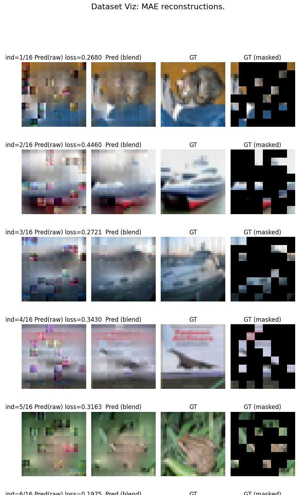
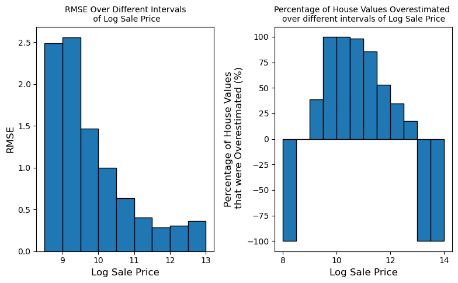

Worked with a real building-sensor dataset from a decade long Berkeley research study — a messy real-world database with billions of readings, inconsistent metadata, and OCR errors in the source tables. I used entity resolution to match records that referred to the same sensor but were labeled inconsistently, outlier detection to catch faulty sensor readings without deleting real (if extreme) values, and missing-data imputation to fill gaps without introducing bias. I also wrote ontology roll-up queries to group thousands of sensors into meaningful categories, since the raw metadata was too messy to analyze directly. All done in raw Postgres SQL, no Pandas required.
CREATE VIEW cleaned_data AS SELECT time, id, value, median, mad, is_outlier, CASE WHEN mad = 0 THEN value WHEN NOT is_outlier THEN value WHEN value > median THEN median + 3 * 1.4826 * mad ELSE median - 3 * 1.4826 * mad END AS clean_value FROM labeled_data;
| id | value | median | mad | is_outlier | clean_value |
|---|---|---|---|---|---|
| a481d4a8… | 812.6 | 727.5 | 16.2 | true | 799.55 |
| a51d3bed… | 75.0 | 6.19 | 4.96 | true | 28.23 |
| a71fbdfd… | 122.9 | 58.7 | 35.7 | false | 122.90 |
| a744b292… | 107.0 | 74.0 | 18.0 | false | 107.00 |
WITH sensor_children AS ( SELECT subject AS sensor_child FROM ontology WHERE object = 'Brick#Sensor' AND predicate = 'subClassOf' ) SELECT sc.sensor_child, COUNT(DISTINCT md.id) AS count FROM metadata AS md INNER JOIN mapping AS map ON md.class = map.rawname INNER JOIN transitive_subClassOf AS t ON map.brickclass = t.subject INNER JOIN sensor_children AS sc ON t.object = sc.sensor_child GROUP BY sc.sensor_child ORDER BY sc.sensor_child;
Built the Transformer architecture from scratch in PyTorch, then trained it to translate English to German on the Multi30K dataset. I implemented scaled dot-product attention so the model could learn which words in a sentence matter most to each other, regardless of distance between them. I extended this into multi-head attention, letting the model track several different types of relationships between words at once (like grammar versus meaning). Since attention has no built-in sense of word order, I added positional embeddings so the model could tell "dog bites man" from "man bites dog." Finally, I connected everything into full encoder and decoder blocks, without relying on any pre-built transformer libraries.
# Y = softmax(mask(Q @ K^T) / sqrt(d)) @ V def forward(self, queries, keys, values, mask=None): key_dim = torch.tensor(keys.shape[-1], dtype=torch.float32) sim = (queries @ keys.transpose(-2, -1)) / torch.sqrt(key_dim) masked_sim = self.apply_mask(sim, mask=mask) attn_weights = F.softmax(masked_sim, dim=-1) output = attn_weights @ values return output, attn_weights
def _split_heads(self, tensor): # tensor: [batch, seq_len, d] -> [batch, n_heads, seq_len, d_head] batch_size, tensorlen = tensor.shape[0], tensor.shape[1] d_head = tensor.shape[2] // self.n_heads tensor_split = tensor.reshape(batch_size, tensorlen, self.n_heads, d_head) tensor_split = tensor_split.transpose(1, 2) return tensor_split def _combine_heads(self, tensor_split): # inverse of _split_heads: recombine per-head outputs size = tensor_split.shape[0] lens = tensor_split.shape[2] d_head = tensor_split.shape[3] tensor_combined = tensor_split.transpose(1, 2) tensor_combined = tensor_combined.reshape(size, lens, self.n_heads * d_head) return tensor_combined
Implemented a Vision Transformer (ViT) and a Masked Autoencoder (MAE) from scratch in PyTorch, then compared three training strategies on CIFAR-10 image classification: supervised ViT from scratch, MAE self-supervised pretraining + linear probing, and full finetuning. I wanted to test how well a model could learn to understand images without needing labeled data for every single one — a big deal in the real world, where labeled data is expensive and limited. The self-supervised MAE model learns to reconstruct images from as little as 25% of the original pixels, forcing it to learn the underlying structure of an image rather than memorizing surface details.
def patchify(images, patch_size=4): # images: [batch, channels, height, width] # -> [batch, num_patches, patch_pixels] patches = rearrange( images, "b c (h hp) (w wp) -> b (h w) (c hp wp)", hp=patch_size, wp=patch_size, ) return patches
def random_masking(x, keep_length, ids_shuffle): # x: (batch, length, feature) input patches # keep_length: number of unmasked patches to keep # ids_shuffle: random permutation controlling which patches are masked shuffled = index_sequence(x, ids_shuffle) kept = shuffled[:, :keep_length] mask = torch.ones(x.shape[:2], device=x.device) mask[:, :keep_length] = 0 ids_restore = torch.argsort(ids_shuffle, dim=1) mask = index_sequence(mask, ids_restore) return kept, mask, ids_restore
| Strategy | Description | Val accuracy |
|---|---|---|
| V1 | ViT, trained supervised from scratch | 80.6% |
| V2 | MAE pretrained, then linear probing | 63.9% |

Built a linear regression model to predict home sale prices for Cook County, Illinois (home of Chicago) — the same kind of model the Cook County Assessor's Office uses to set property tax assessments. In 2017, the CCAO was sued for producing racially discriminatory assessments that systematically overvalued inexpensive homes and undervalued expensive ones (a pattern known as regressive taxation) — in effect, lower-income homeowners ended up paying unfairly high taxes relative to their home's actual value, while wealthier homeowners got away with paying comparatively less. I wanted to see whether an independently built model would fall into the same trap, so after building mine, I compared its errors across price brackets to check whether it reproduced that same regressive pattern — it did.
def add_total_bedrooms(data): # "Bedrooms" isn't a column -- it's buried in a free-text # "Description" field, so we pull it out with a regex. with_rooms = data.copy() with_rooms['Bedrooms'] = with_rooms['Description'].str.extract( r'(\d+) of which are bedroom' ) with_rooms['Bedrooms'] = with_rooms['Bedrooms'].fillna(0).astype(int) return with_rooms
def rmse_interval(df, start, end): # RMSE for homes whose true log sale price falls in [start, end] subset = df[(df['True Log Sale Price'] >= start) & (df['True Log Sale Price'] <= end)] return np.sqrt(np.mean((subset['Predicted Log Sale Price'] - subset['True Log Sale Price']) ** 2)) def prop_overest_interval(df, start, end): # What fraction of homes in this bracket did the model overvalue? subset = df[(df['True Log Sale Price'] >= start) & (df['True Log Sale Price'] <= end)] return np.mean(subset['Predicted Log Sale Price'] > subset['True Log Sale Price'])
| Price bracket | Homes overestimated |
|---|---|
| Cheaper half of homes | 63.9% |
| More expensive half of homes | 29.99% |
Training RMSE: 53,722 (on Sale Price, delogged). Cheaper homes were overvalued more than twice as often as expensive homes — the same regressive pattern at the center of the real CCAO lawsuit.

A research paper examining how automated decision-making (ADM) and preemptive computing on dating apps shape who becomes visible, desirable, and matchable — and how these systems can reproduce discriminatory and soft-eugenic patterns under the guise of "scientific" compatibility matching. Argues that dating platforms convert political control over romantic visibility into eugenic-adjacent sorting by race, class, and appearance, while their business model actively rewards prolonged searching over successful matches.
Preemptive computing and ADM govern visibility and desirability on dating apps — producing political implications by structuring who gets access to potential partners, and eugenic implications by reinforcing similarity-based ideals about who "should" match.